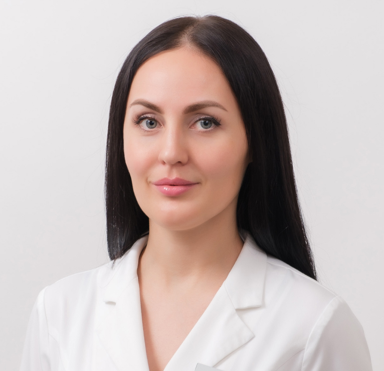
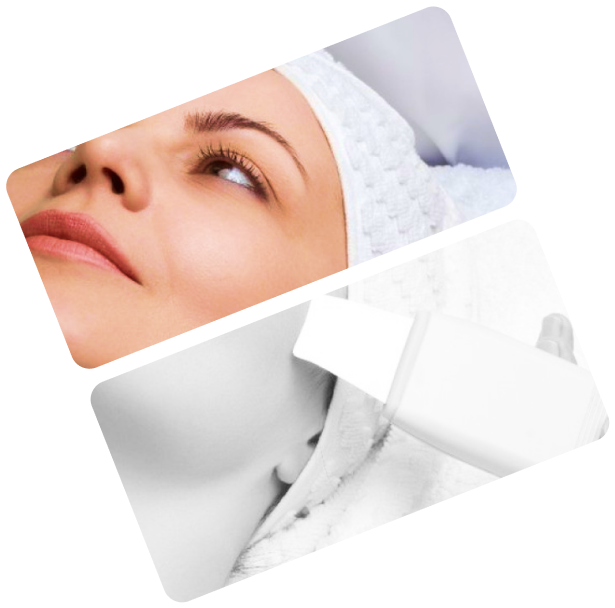
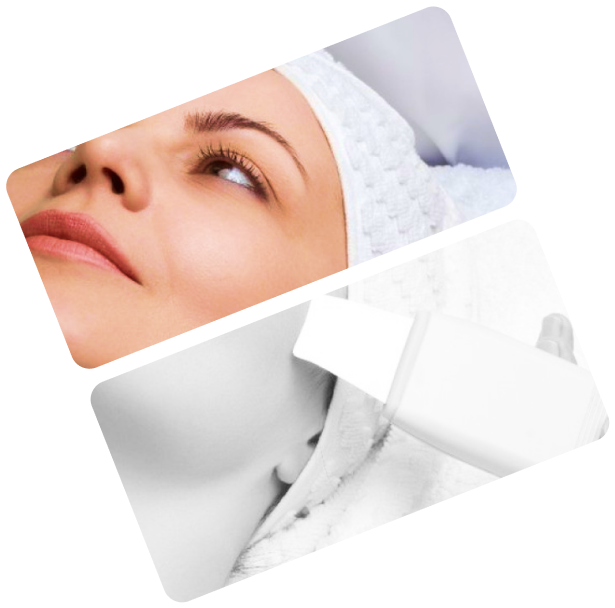
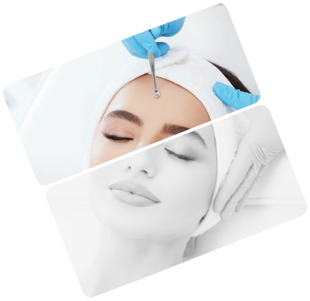
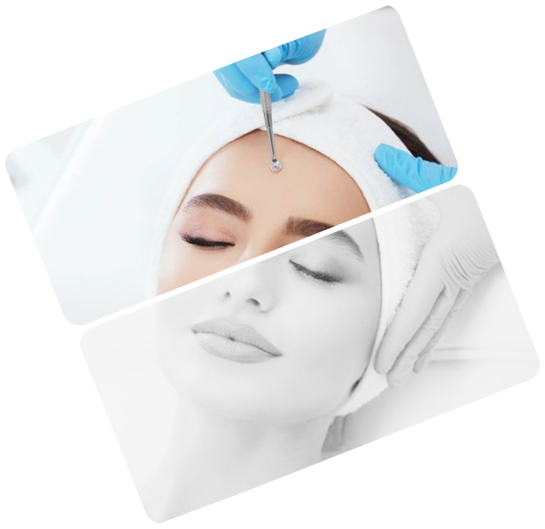

8 (434) 33 34 235
8 (420) 33 34 235
г. Железнодорожный, ул. Московская, д. 12 кв.2
Заказать звонок

Частный косметолог
Курбак Елена
Меня зовут Елена, я косметолог-эстетист. Работаю в космектологии более 18 лет. Специализируюсь на лечении проблемной кожи лица, процедурах и пилингах. Имею множество сертификатов и дипломов, подтверждающих мою компектенцию.
Очень важно, чтобы процедуры проходили в уютной, спокойной обстановке, в дружеской атмосфере. Поэтому рада видеть Вас у себя. Для каждого клиента мы разрабатываем индивидуальную программу, проводим процедуры и подбираем индивидуальные средства ухода. Я буду рада новым знакомствам.
 Посмотреть видео обо мне
Посмотреть видео обо мне
 
 
